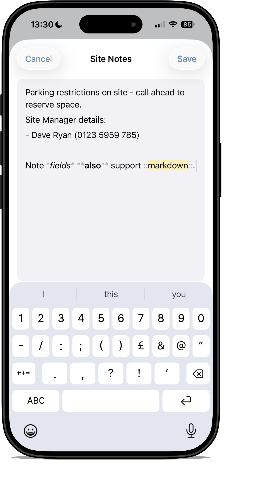

Notes and Markdown
Snaglite supports notes as part of the inspection process. Notes can be used to add context, clarify a defect, or record supplementary information that does not fit neatly into a short snag title.

Use notes for:
- extra detail that supports the snag description
- inspection context
- practical observations
- short structured lists where needed
Notes should still be concise. In most cases, shorter and clearer is better.
Markdown support
Notes support markdown-style formatting. This can be used to improve readability and structure where longer notes need clearer presentation.
The available formatting options include:
- bold
- italic
- highlight
- strikethrough
- code
- link
- heading
- list
- numbered list
- task list
In practice, the most useful options for inspection notes are usually emphasis, highlight and simple lists. Use heavier formatting only where it adds genuine value.
Example
Access restricted before 08:00. Call ahead to reserve the right parking bay.
Site Manager details:
- Ned Miller
- 07890 123456
Use italic, bold, highlighted text, lists and links where they genuinely improve clarity.
Use formatting with restraint. Inspection notes are usually most effective when they are factual, direct and easy to scan.
When to use notes instead of the snag title
The snag title or main description should identify the issue itself. Notes should be used for supporting detail rather than repeating the same wording.
A useful approach is:
- Snag title: the core defect
- Notes: extra explanation, qualifiers or follow-up detail
Example
Snag: Damage to skirting board at bedroom entrance.
Note: Appears to have been caused during flooring works. Check adjacent trim before making good.
Good practice for notes
- keep wording factual
- avoid long paragraphs unless genuinely necessary
- use formatting only where it improves readability
- do not let notes become repetitive
- review the final wording before export
AI note improvement
Where available, Snaglite may offer AI assistance to improve a draft note. This can help refine wording, grammar or structure.
AI assistance should be treated as an editing aid, not as a substitute for inspection judgement. Always check the final wording before saving or reporting.
- make sure the issue is still described accurately
- remove wording that sounds too vague or too certain
- check that responsibility or causation has not been overstated
- confirm the final note still reflects what was actually observed on site